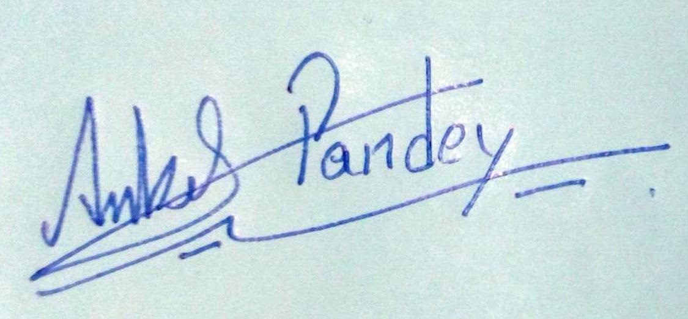

ANKIT KUMAR PANDEYAddress: Vill-Sadiha, District-Siwan, Bihar-841507 Mobile no.: 7063359922 Email id: Ankitspandeyofficial@gmail.com |
Objective:To secure challenging position in an IT company where I can learn many other new technologies and utilize my skills to make a significant contribution to the success of the company.
| College/School | Course/Degree | University/Board | CGPA/Percentage | Year of Passing |
|---|---|---|---|---|
| B.P.Poddar Institute of Management and Technology, Kolkata, W.B. | B.Tech in Computer Science and Engineering | MAKAUT(Formerly WBUT) | 9.22 CGPA (Avg. till 6th Semester) | 2023 [Expected] |
| Gorakh Singh College, Maharajganj,Bihar | Higher Secondary Examination (12th) | BSEB | 77.20% | 2019 |
| Cambridge English School, Kurseong, W.B. | Secondary Examination ICSE(10th) | CISCE | 75.40% | 2017 |
| PYTHON | ⭐⭐⭐⭐ |
| SQL | ⭐⭐⭐⭐ |
| DBMS | ⭐⭐⭐⭐⭐ |
| C | ⭐⭐⭐⭐ |
| BOOTSTRAP | ⭐⭐⭐ |
| FLASK | ⭐⭐⭐ |
| HTML | ⭐⭐ |
| CSS | ⭐ |
03/2021 - 05/2021
04/2021 - 05/2021
- It is a Python application program that understands human language voice commands and completes tasks for the user.
- It sends emails without typing a single word, do Wikipedia searches without opening web browsers, and performs many other daily tasks like playing music with the help of a single voice command.
- Algorithm predicts the occurrence of lightning in an area and alerts the people in the danger zone via phone call and sms in regional language.
-Algorithm was hosted on AWS EC2 instance. Registration options were via a web portal, android app or an offline sms.
-Data from Indian Meteorological department and AQI data were combined statistically for the predictio
I hereby declare that all information in this resume is true and correct to the best of my knowledge.
Place: Kolkata, W.B., India
Date: 18th August,2022
|
Signature: |
 |